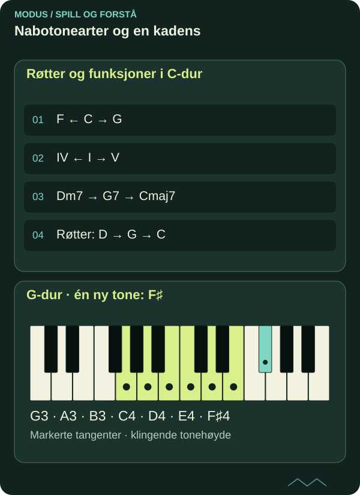

Kvintsirkelen – musikkens egen klokke
Se for deg en klokke med C-dur øverst. Ett steg med klokken tar deg til G-dur, og ett steg mot klokken tar deg til F-dur. Med dette kartet kan du finne faste fortegn og relative molltonearter, forstå akkordforbindelser og flytte musikk til en ny toneart.

Fra rene kvinter til temperering
I antikkens greske musikkteori ble intervaller beskrevet med enkle tallforhold. En akustisk ren kvint har frekvensforholdet 3:2. Når to strenger ellers har samme egenskaper, klinger en streng med to tredjedeler av lengden en ren kvint over den lengre.
Tolv akustisk rene kvinter overskrider sju oktaver med omtrent 23,46 cent. Forskjellen kalles det pytagoreiske kommaet. Ulike stemmesystemer fordeler avvikene mellom intervallene på ulike måter. I likesvevende stemming måler kvinten 700 cent, mot omtrent 702 cent for forholdet 3:2.
Blant de tidligste kjente sirkeldiagrammene er kvintsirkelen i Nikolaj Diletskijs musikkteoretiske arbeid fra slutten av 1670-årene. Beslektede sirkeldiagrammer dukker også opp i vesteuropeisk musikkteori på 1700-tallet.
Hvert bind av Johann Sebastian Bachs Das wohltemperierte Klavier, fra 1722 og omkring 1740–1742, har et preludium og en fuge i hver av de 24 dur- og molltoneartene. Bachs eksakte stemming er ukjent. Moderne likesvevende stemming fordeler de tolv halvtonetrinnene likt i oktaven.
Jensens studie av Diletskij · Blake og Albrechts studie av Bach og temperering

Les diagrammet som tekst
- Røtter og funksjoner i C-dur: F ← C → G; IV ← I → V; Dm7 → G7 → Cmaj7; Røtter: D → G → C
- G-dur · én ny tone: F♯: G3 → A3 → B3 → C4 → D4 → E4 → F♯4
Hvordan sirkelen er bygget opp
Start med C øverst. Med klokken stiger grunntonen en kvint, sju halvtoner i likesvevende stemming. Mot klokken går du i fallende kvinter, som også kan spilles som stigende kvarter. Etter tolv steg når du samme toneklasse i en annen oktav.
Den ytre ringen viser durtoneartene, og den indre viser relativ moll. C-dur står ved A-moll, G-dur ved E-moll og D-dur ved B-moll. MODUS bruker internasjonale tonenavn. B tilsvarer norsk H, mens B♭ tilsvarer tradisjonell norsk B.
Les diagrammet som tekst
- Røtter og funksjoner i C-dur: F ← C → G; IV ← I → V; Dm7 → G7 → Cmaj7; Røtter: D → G → C
- G-dur · én ny tone: F♯: G3 → A3 → B3 → C4 → D4 → E4 → F♯4

Fortegn i dur
Durskalaen følger mønsteret hel–hel–halv–hel–hel–hel–halv. Flytter du tonika fra C til G, heves F til F♯ slik at det fortsatt er et halvt trinn fra sjuende trinn til tonika. D-dur beholder F♯ og får C♯. Naboskalaene har seks av sju toneklasser felles.
Mot klokken fra C-dur senkes B til B♭ for å få F-dur. Neste steg, B♭-dur, beholder B♭ og får E♭.
C-dur · Ingen
G-dur · F♯
D-dur · F♯ + C♯
Kryss · F♯ – C♯ – G♯ – D♯ – A♯ – E♯ – B♯
B-er · B♭ – E♭ – A♭ – D♭ – G♭ – C♭ – F♭
Finn durtonearten fra fortegnene
Med kryss finner du durtonikaen en halvtone over det siste krysset. Er C♯ det siste, får du D-dur. Med minst to b-er gir den nest siste b-en durtonikaen. Med B♭, E♭ og A♭ får du E♭-dur. Ett enkelt B♭ gir F-dur som durtoneart.
Hver durskala bruker hvert bokstavnavn én gang. Derfor skrives sjuende trinn i F♯-dur som E♯. F♯-dur og G♭-dur har seks fortegn hver og bruker de samme tangentene på et likesvevende piano. Skrivemåten viser hvilket trinn hver tone har.
| Toneart | Faste fortegn | Skalatoner |
|---|---|---|
| C-dur | Ingen | C D E F G A B |
| G-dur | 1 kryss | G A B C D E F♯ |
| D-dur | 2 kryss | D E F♯ G A B C♯ |
| A-dur | 3 kryss | A B C♯ D E F♯ G♯ |
| E-dur | 4 kryss | E F♯ G♯ A B C♯ D♯ |
| B-dur | 5 kryss | B C♯ D♯ E F♯ G♯ A♯ |
| F♯-dur | 6 kryss | F♯ G♯ A♯ B C♯ D♯ E♯ |
| C♯-dur | 7 kryss | C♯ D♯ E♯ F♯ G♯ A♯ B♯ |
| F-dur | 1 b | F G A B♭ C D E |
| B♭-dur | 2 b-er | B♭ C D E♭ F G A |
| E♭-dur | 3 b-er | E♭ F G A♭ B♭ C D |
| A♭-dur | 4 b-er | A♭ B♭ C D♭ E♭ F G |
| D♭-dur | 5 b-er | D♭ E♭ F G♭ A♭ B♭ C |
| G♭-dur | 6 b-er | G♭ A♭ B♭ C♭ D♭ E♭ F |
| C♭-dur | 7 b-er | C♭ D♭ E♭ F♭ G♭ A♭ B♭ |
Relativ moll og de tre mollskalaene
Du finner relativ moll en liten ters under durtonikaen, eller på sjette trinn i durskalaen. C-dur og A naturlig moll deler de samme sju tonene, med henholdsvis C og A som tonika. Lytt til melodien, akkordene og hvilepunktene når du skal avgjøre hvilket sentrum som gjelder.
| Dur | Relativ moll | Faste fortegn |
|---|---|---|
| C-dur | A-moll | Ingen |
| G-dur | E-moll | F♯ |
| D-dur | B-moll | F♯, C♯ |
| F-dur | D-moll | B♭ |
| B♭-dur | G-moll | B♭, E♭ |
Naturlig moll · A – B – C – D – E – F – G – A
Harmonisk moll · A – B – C – D – E – F – G♯ – A
Melodisk moll, stigende · A – B – C – D – E – F♯ – G♯ – A
Klassisk melodisk moll, nedadgående skoleform · A – G – F – E – D – C – B – A
Harmonisk moll hever sjuende trinn fra G til G♯. Lytt til ledetonen i Am–Dm–E7–Am. E7 består av E–G♯–B–D, og G♯ leder opp til A. Stigende melodisk moll hever både sjette og sjuende trinn. I klassiske skalaøvelser brukes ofte naturlig moll på vei ned. Jazzteori bruker vanligvis den stigende formen i begge retninger. A-moll beholder sine faste fortegn i alle variantene.
Diatoniske septimakkorder
Bygg en akkord ved å ta annenhver tone fra skalaen. Tre toner gir en treklang, og fire gir en septimakkord. I C-dur får du durseptimakkorder på første og fjerde trinn, mollseptimakkorder på andre, tredje og sjette, dominantseptimakkord på femte og halvforminsket septimakkord på sjuende.
| Trinn | Akkord | Akkordtoner |
|---|---|---|
| Imaj7 | Cmaj7 | C–E–G–B |
| ii7 | Dm7 | D–F–A–C |
| iii7 | Em7 | E–G–B–D |
| IVmaj7 | Fmaj7 | F–A–C–E |
| V7 | G7 | G–B–D–F |
| vi7 | Am7 | A–C–E–G |
| viiø7 | Bm7♭5 | B–D–F–A |
I C–D7–G7–C inneholder D7 tonene D–F♯–A–C. F♯ er kromatisk i C-dur. D7 er V7/V, en sekundærdominant som peker mot G, dominanten i C-dur.
Tonika, subdominant og dominant
På sirkelen står F og G på hver sin side av C. I C-dur er C tonika (I), F subdominant (IV) og G dominant (V). Spill C–F–G–C og lytt til hvordan F beveger seg bort fra sentrum, mens G bygger forventning om å komme tilbake til C.
Spill så D–G–A–D. Funksjonene er fremdeles I–IV–V–I. I A-moll er Dm vanlig på iv, mens E eller E7 kan fungere som dominant.
ii–V–I og stemmeføring
Dm7–G7–Cmaj7 er ii7–V7–Imaj7 i C-dur. Dm7 forbereder dominanten G7, som leder til Cmaj7. Røttene D–G–C følger to steg mot klokken. Flytt hele kadensen til G-dur for å få Am7–D7–Gmaj7.
I klassisk dominantoppløsning leder G7-tersen B opp til C, mens septimen F går ned til E. I en Cmaj7-voicing kan en annen stemme ta B. Spill for eksempel de fire stemmene i oversikten fra nederst til øverst. Cmaj7 kan her spilles uten kvinten G.
Bass · D3 → G2 → C3
Tenor · C4 → B3 → C4
Alt · F4 → F4 → E4
Sopran · A4 → D5 → B4
Transponering og modulasjon
Når du transponerer C–F–G–C en kvint opp, får du G–C–D–G. Trinnene I–IV–V–I og alle intervallene bevares. Har du en melodi til akkordene, flytter du også den en kvint opp.
En modulasjon skifter tonalt sentrum underveis. Spill C–F–G7–C, fulgt av Am7–D7–G–G. Am7 er vi7 i C-dur og kan bli ii7 i G-dur. D7–G gir en dominant–tonika-forbindelse i G-dur. La melodien lande på G og gi den nye tonikaen tid. Om musikken raskt vender tilbake til C, kan D7–G høres som en kort tonikalisering.
Modalitet og melodiske mål
C ionisk og D dorisk deler tonene C, D, E, F, G, A og B. I D dorisk danner F en liten ters og B en stor sekst over D. Bruk disse tonene sammen med rytme, harmonikk og frasering for å etablere D som sentrum.
På piano og gitar
Spill C-dur, G-dur og D-dur langsomt på piano. Finn først F♯ og deretter C♯. Spill I, IV og V i hver toneart og lytt til hva som skjer når du veksler mellom tonene i skalaen og tonene i akkordene.
Finn C, G og D i et område på gitarhalsen du kjenner. Spill C–F–G–C, og flytt så progresjonen til G–C–D–G. Velg grep eller enkelttoner som ligger i omtrent samme håndposisjon.
Improviser med akkordtoner
Spill Dm7–G7–Cmaj7 som backing. Start med røttene D, G og C. Legg til ters og septim, og bruk deretter resten av C-durskalaen til å binde sammen akkordtonene.
Bruk samme metode på Em–C–G–D. Alle fire akkordene hører til toneforrådet i G-dur. Fremhev tersene G, E, B og F♯ i rekkefølge. Du kan bli i samme skalaposisjon mens måltonen følger harmonien.
Ni øvelser med fasit
Finn fortegnene
Hvor mange faste kryss har E-dur, og hvilke toner gjelder de?
Vis fasit
E-dur har fire kryss: F♯, C♯, G♯ og D♯.
Les tonearten
Hvilken durtoneart har B♭, E♭ og A♭ som faste fortegn?
Vis fasit
E♭-dur. Den nest siste b-en er E♭.
Bygg skalaen
Skriv alle tonene i A♭-dur. Kontroller intervallene mellom skalatrinnene.
Vis fasit
A♭–B♭–C–D♭–E♭–F–G–A♭.
Finn relativ moll
Hva er relativ moll til D-dur, og hvilke faste fortegn deler de?
Vis fasit
B-moll. Både D-dur og B-moll har F♯ og C♯ som faste fortegn.
Bygg en diatonisk akkord
Er Em7 diatonisk i G-dur? Forklar svaret ved å sammenligne akkordtonene med skalaen.
Vis fasit
Ja. Em7 består av E–G–B–D. Alle fire tonene finnes i G-dur.
Analyser funksjonene
Analyser progresjonen: Dm7 – G7 – Cmaj7 Oppgi romertall og funksjon. Forklar hvorfor akkordene kan skape en tydelig harmonisk avslutning.
Vis fasit
ii7–V7–Imaj7 i C-dur. Dm7 fungerer som predominant, G7 som dominant og Cmaj7 som tonisk målklang. Dominantens ters B kan løses opp til C, og septimen F kan løses ned til E.
Transponer
Transponer progresjonen: C – F – G – C til E-dur. Behold funksjonene I–IV–V–I.
Vis fasit
E–A–B–E. Funksjonene er fortsatt I–IV–V–I.
Lag din egen progresjon
Skriv åtte takter med akkorder. La de første fire taktene etablere C-dur. Bruk de siste fire til å undersøke om du kan etablere G-dur. Skriv en kort melodi og forklar hvilke toner som bidrar til å etablere det nye sentrumet.
Vis fasit
Et mulig svar: C | F | G7 | C | Am7 | D7 | G | G Am7 kan forstås som vi7 i C-dur og ii7 i G-dur. D7–G etablerer en dominant–tonika-forbindelse i den nye tonearten. Om forløpet virkelig oppleves som en modulasjon, avhenger også av melodi, fraseoppbygning og hva musikken gjør videre.
Sammenlign modalitet
Bruk tonene C, D, E, F, G, A og B. Lag én frase med C som tonalt sentrum og én med D som sentrum. Forklar hvorfor de kan oppleves forskjellig selv om toneforrådet er identisk.
Vis fasit
En frase som får C til å fungere som hvilepunkt, kan etablere et ionisk sentrum. Hvis D etableres som hvilepunkt, og F og B brukes som karakteristiske intervaller over D, kan frasen etablere et dorisk uttrykk. Bare start- og slutttonene er ikke nødvendigvis tilstrekkelige. Det musikalske sentrumet må støttes av konteksten.
Fra kart til musikalsk forståelse
Kvintsirkelen knytter kvintforhold, fortegn og relativ moll sammen. Prøv å bruke den til å forutse grunntonebevegelsen i en kadens. Lytt så til stemmene og melodien for å høre hvor musikken finner et hvilepunkt.
Kontroller forståelsen
- 1. Hvorfor kommer G etter C når vi beveger oss med klokken?
- Fordi G ligger en ren kvint, sju halvtoner, over C.
- 2. Hvorfor har G-dur F♯?
- Fordi F må heves for at durskalaens hel- og halvtonemønster skal bevares med G som grunntone.
- 3. Hvilken toneklasse endres når vi går fra C-dur til F-dur?
- B senkes til B♭.
- 4. Hva er relativ moll til D-dur?
- B-moll. De deler de samme faste fortegnene: F♯ og C♯.
- 5. Hvorfor er G7 → Cmaj7 en dominant–tonika-forbindelse i C-dur?
- G7 fungerer som V7 i C-dur. Akkorden inneholder blant annet B og F, som kan danne ledende stemmebevegelser mot tonene i tonika. Den harmoniske konteksten etablerer C som sentrum.
- 6. Hvorfor er ikke Dm7 → G7 → Cmaj7 bare tre durtonearter fra kvintsirkelen?
- Fordi Dm7, G7 og Cmaj7 er akkorder med bestemte kvaliteter og funksjoner i C-dur. Kvintsirkelen forklarer forholdet mellom grunntonene, men ikke alene akkordkvalitetene.
- 7. Hvorfor kan C ionisk og D dorisk bruke de samme tonene uten å være samme modus?
- Fordi de har forskjellige tonale sentra og dermed forskjellige intervallforhold fra grunntonen.
- 8. Hva er forskjellen mellom transponering og modulasjon?
- Transponering flytter et musikalsk materiale til et nytt toneleie med bevarte intervallforhold. Modulasjon er et skifte av tonalt sentrum innenfor et musikalsk forløp.
Prøv det selv
Åpne Dm7–G7–Cmaj7 i akkordverkstedet. Spill og syng D–G–C, og finn bevegelsen mot klokken i sirkelen. Flytt deretter kadensen til G-dur: Am7–D7–Gmaj7. Behold ii–V–I, og lytt etter hvor musikken lander.
Spill Dm7–G7–Cmaj7 i akkordverkstedetSJEKK FORSTÅELSEN
Hva sitter igjen?
Tre spørsmål om det du har lest. Alle tre riktige gir fullført quiz. Du kan prøve så mange ganger du vil.
Fullføring lagres i denne nettleseren og deles mellom norsk og engelsk.
Du har svart riktig på alle tre spørsmålene. Ta ideen med til instrumentet.
Til artikkelbiblioteket ↗︎